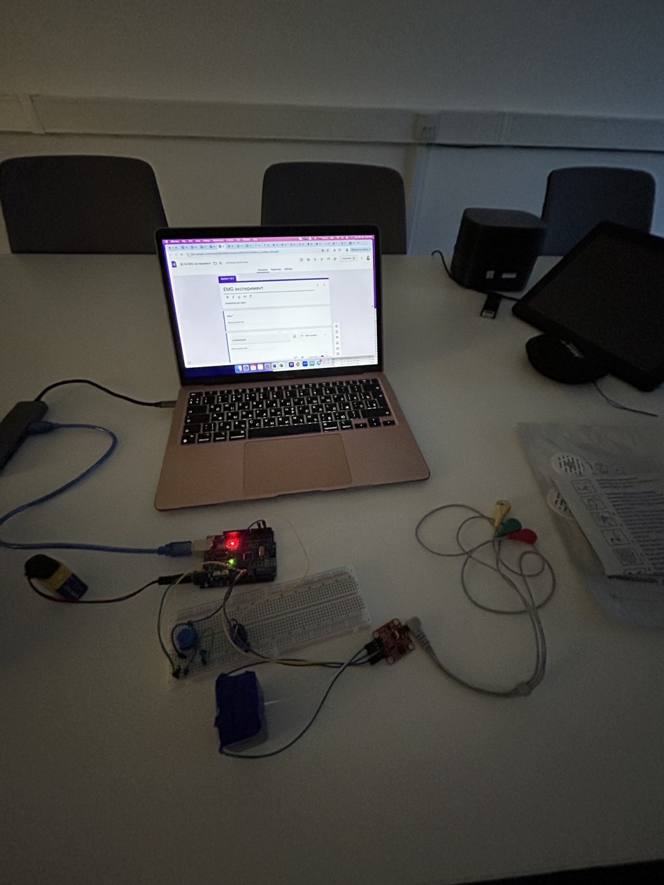
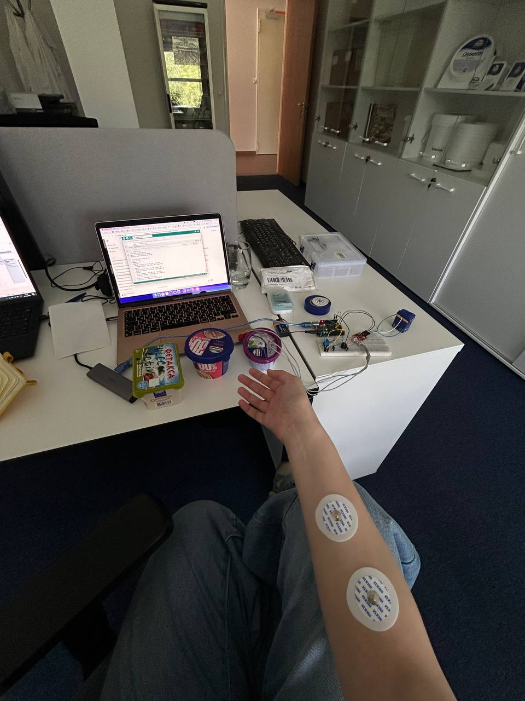

Оборудование
В прототипе использовались Arduino, ЭМГ-датчик, кнопка управления, зуммер и электроды, закреплённые на предплечье участника.
Физиологические вычисления · человеческий фактор · исследование удобства продукта
Прототип на Arduino и ЭМГ-датчике, созданный для перевода субъективных жалоб на трудно открываемую упаковку в измеримые данные и решения по конструкции.

01 · Обзор
Проект появился в ответ на повторяющиеся жалобы потребителей: один из форматов упаковки сыра было трудно открывать. Главная задача — выйти за пределы субъективной обратной связи и создать объективный способ оценки усилия при открывании.
Я руководила исследованием упаковки и собрала на Arduino прототип ЭМГ-системы для измерения мышечной активности во время открывания. Система позволила сравнить комбинации компонентов упаковки и проверить, отражают ли жалобы потребителей измеримые различия в физическом усилии.
02 · Прототип
В прототипе использовались Arduino, ЭМГ-датчик, кнопка управления, зуммер и электроды, закреплённые на предплечье участника.
Каждый участник выполнял три попытки. Звуковые сигналы отмечали фазы расслабления и действия, а субъективные оценки отдельно собирались через Google Forms.
Для интерактивной статистической визуализации использовался Plotly: полная кликабельная таблица и сравнительный анализ вариантов упаковки.

03 · Эксперимент
Скрипт рассчитывал средние и пиковые значения ЭМГ для фаз покоя и действия, а затем выводил сводку по трём попыткам.
04 · Результаты
протестированных крышек требовали заметного или чрезмерного усилия.
протестированных крышек попали в красную зону — максимальный риск для удобства использования.
снижение пиков ЭМГ при использовании временного инструмента для открывания.
В итоговом отчёте комбинации упаковки были распределены по зонам усилия на основе значений ΔMean и ΔPeak ЭМГ. Анализ показал, что проблема измерима, а не только субъективна. Комбинация «ванна Kutterer × крышка Artpack» дала значительно более высокую долю результатов в красной зоне и была определена как основной источник проблемы.
Временный инструмент сделал открывание более предсказуемым и комфортным, но не решил полностью самые сложные случаи. Результаты были представлены внутри компании и обсуждены с поставщиком, который позднее воспроизвёл выводы на независимом роботизированном испытательном стенде.
05 · Материалы
06 · Код
const int emgPin = A0;
const int buttonPin = 2;
const int buzzerPin = 4;
const unsigned long relaxTime = 3000;
const unsigned long actionTime = 5000;
const int sampleDelay = 5;
const float vRef = 5.0;
const int adcMax = 1023;
const float maxVoltage = 3.0 * 1000;
int participant = -1;
String product = "";
int state = 0;
bool dataEntered = false;
int trial = 0;
const int totalTrials = 3;
float baselineMeans[totalTrials];
float baselinePeaks[totalTrials];
float actionMeans[totalTrials];
float actionPeaks[totalTrials];
const int filterSize = 10;
void setup() {
Serial.begin(9600);
pinMode(buttonPin, INPUT_PULLUP);
pinMode(buzzerPin, OUTPUT);
}
void performMeasurement(int trialNumber) {
tone(buzzerPin, 1000, 500);
delay(600);
float baselineMean, baselinePeak;
measurePhase(relaxTime, baselineMean, baselinePeak);
tone(buzzerPin, 1500, 500);
delay(600);
float actionMean, actionPeak;
measurePhase(actionTime, actionMean, actionPeak);
baselineMeans[trialNumber] = baselineMean;
baselinePeaks[trialNumber] = baselinePeak;
actionMeans[trialNumber] = actionMean;
actionPeaks[trialNumber] = actionPeak;
}